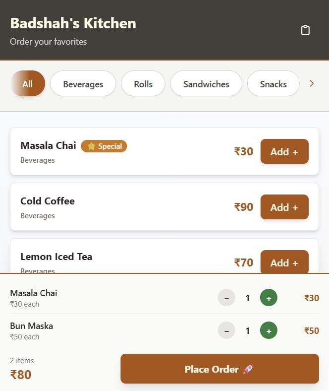
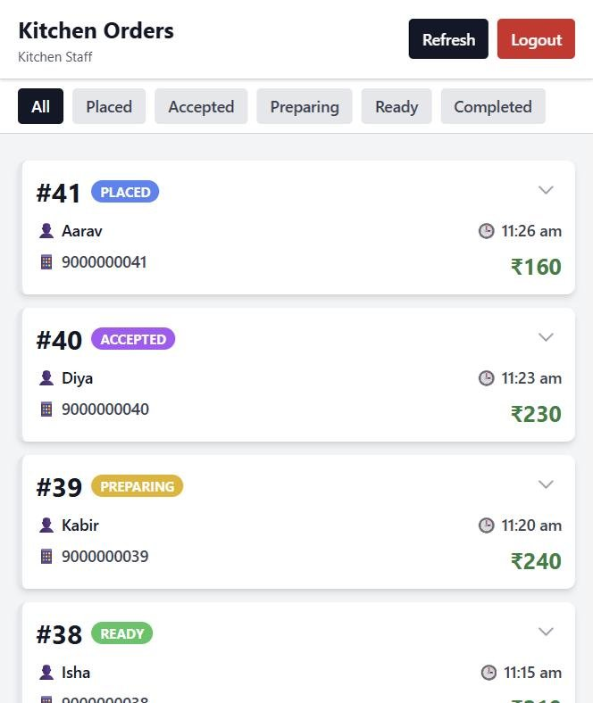

cloud software · restaurant
Restaurant order system
No paper slips. No lost orders. No shouting across the counter.
Busy cafés lose money in the gap between the counter and the kitchen. Here, guests order from their own phone, the kitchen sees it the same second, and the owner reads the day's sales without touching a register.
source ↗built for a working café


Product flow
- Guest orders from their phonebrowse by category, cart, place order
- Kitchen board updates instantlyno refresh, no runner
- Placed → Accepted → Preparing → Readythe guest watches it move
- Owner checks menu, sales and ratingsedit prices, hide sold-out items
What changes: fewer wrong orders, faster tables, less running between counter and kitchen at peak time.
Under the hood
Next.js 15→Supabase Postgres→Realtime websockets
- Orders pushed to the kitchen over websockets, not polling.
- Each order line keeps its own price, so a menu change never rewrites old bills.
- Staff passwords are checked on the server and never ship to the browser.
- Load-tested with k6 scripts for the menu and order paths.
Design call
Built for one thumb at a table and a busy kitchen screen: big tap targets, colour-coded statuses, nothing to learn.